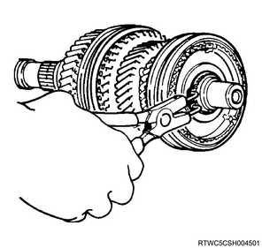
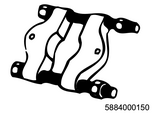
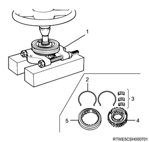
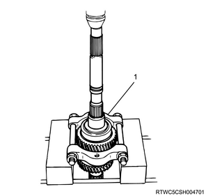
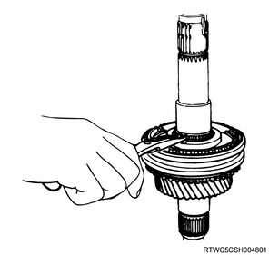
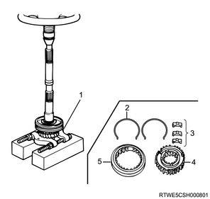

1. Remove the main shaft snap ring from the main shaft using a snap ring pliers.

1. Remove the 3rd - 4th synchronizer assembly from the main shaft using special tool.
Note
2. Disassemble the 3rd - 4th synchronizer assembly.

SST: 5-8840-0015-0 - bearing installer & remover

1. Remove the 3rd block ring from the main shaft.
1. Remove the 3rd gear from the main shaft.
2. Remove the needle bearing from the main shaft.
1. Remove the 1st gear from the main shaft using special tool.
Note
SST: 5-8840-0015-0 - bearing installer & remover

1. Remove the ring from the main shaft.
Note
2. Remove the 1st block ring from the main shaft.
3. Remove the needle bearing from the main shaft.
1. Remove the snap ring from the main shaft using a snap ring pliers.
Note

2. Remove the 2nd gear from the main shaft using special tool.
Note
SST: 5-8840-0015-0 - bearing installer & remover

3. Remove the needle bearing from the main shaft.